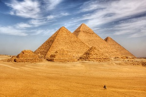
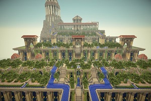
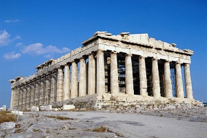
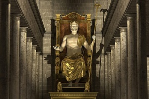
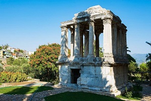
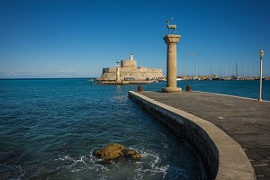
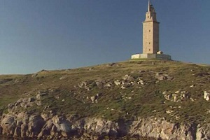

It is the oldest and largest of the pyramids in the Giza pyramid complex bordering present-day Giza in Greater Cairo,
filling 13 acres at its base, 481 feet tall.
Egyptologists conclude that the pyramid was built as a tomb for the Fourth
Dynasty Egyptian pharaoh Khufu and estimate that it was built in the 26th century BC.

The Hanging Gardens of Babylon were one of the Seven Wonders of the Ancient World listed by Hellenic culture.
They were described as a remarkable feat of engineering with an ascending series of tiered gardens containing a
wide variety of trees,
shrubs, and vines, resembling a large green mountain constructed of mud bricks.

The Temple of Artemis or Artemision, also known as the Temple of Diana, was a Greek temple dedicated to an
ancient, local form of the goddess Artemis.
It was completely rebuilt twice, once after a devastating flood and three hundred years later after an act of arson,
and in its final form was one of the Seven Wonders of the Ancient World.a

The Statue of Zeus is a giant seated figure, about 12.4 m tall,
made by the Greek sculptor Phidias around 435 BC at the sanctuary of Olympia
The statue depicted the god Zeus seated on his throne, his skin of ivory and robes of hammered gold.
It fell into ruin after the rise of Christianity and the ban on the Olympic Games as 'pagan rites'.

It was the tomb of the Persian Satrap, died in 353 BCE, and Artemisia(wife) wished to create a final resting place
worthy of such a great king.
Artemisia died two years later and her ashes were entombed with his in the mausoleum
It was destroyed by a series of earthquakes and lay in ruin for hundreds of years until, in 1494 CE.

The Colossus of Rhodes was a statue of the sun-god Helio
Constructed between 292 and 280 BCE. It stood over 110 feet high, overlooking the busy harbor of Rhodes.
it was constructed to celebrate the successful defence of Rhodes city against an attack by Demetrius Poliorcetes.
It was destroyed by an earthquake in 226 BCE.

The Lighthouse at Alexandria, built on the island of Pharos, stood close to 330 feet in overall height and was commissioned
by Ptolemy I Soter.
its light (a mirror which reflected the sun's rays by day and fire by night) could be seen 35 miles out to sea.
It was severely damaged by three earthquakes between 956 AD and 1323 and became an abandoned ruin.